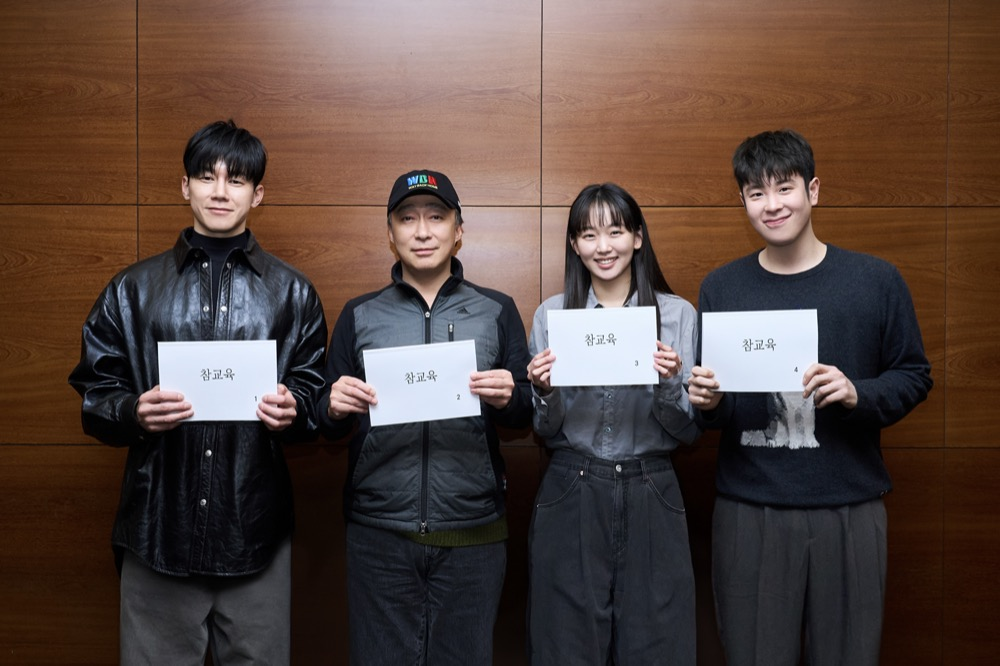
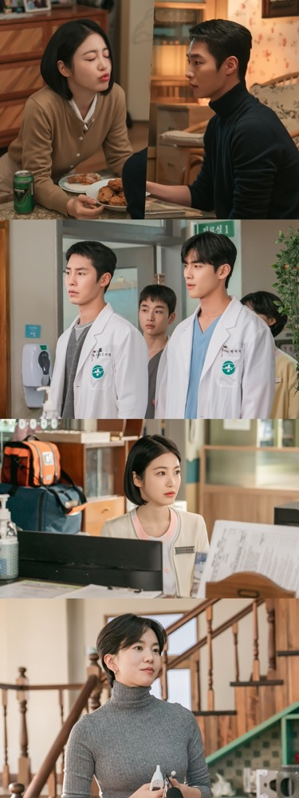
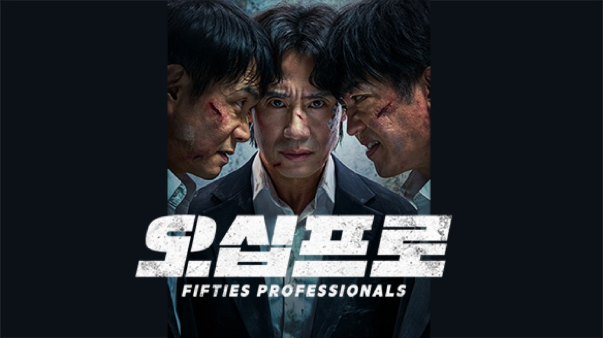
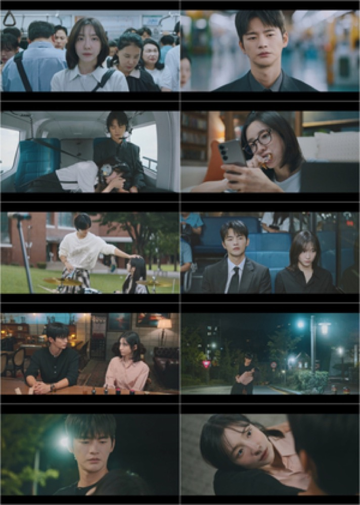

OTT
참교육
월간 화제성
매우 높음
6월 1위
글로벌
비영어 1위 · 다주 연속
시청 반응
호평 70% · 혹평 18%
화제성
출연자 1위 · 김무열
넷플릭스 비영어 글로벌 순위 추이 ▲ 1위=최상단
공개 3일 만에 1위 직행 → 6월 내내 정상 사수 · 비영어 TV 부문 다주 연속 글로벌 1위
6월 종합 결산
- [성과]6월 최대 성과작. 6/5 공개 후 사흘 만에 넷플릭스 비영어 글로벌 1위로 직행해 여러 주 연속 정상을 사수했다. 국내에서도 '6월 한국인이 좋아하는 방송영상프로그램 1위'(선호도 10.7%)에 오르며 안팎으로 6월을 지배했다.
- [화제 요인]인기 웹툰 원작 + "교권보호국"의 사이다 응징 구조가 대리만족 엔진. 주연 김무열이 6월 드라마 출연자 화제성 1위에 올랐고, 표지훈(피오)의 봉근대 등 캐릭터도 밈으로 확산됐다. "도파민 그 자체"라는 반응이 완주·재생을 견인했다.
- [시청 반응]압도적 호평 속 뚜렷한 호불호. 다수 시청자는 "현실에선 불가능한 사이다"로 소비했으나, 교권 단체·평론가는 "폭력을 폭력으로 갚는 판타지"이자 실제 교권 현실과의 괴리를 비판했다. 이 윤리 논쟁 자체가 화제성을 더 키웠다.
화제포인트 · 참고
🔀 호불호 핵심 — '사적 응징 = 사이다'냐 '폭력 미화'냐. 통쾌함과 윤리 논쟁이 동시에 화력으로 작용.
- [평론]"'참교육'에 전 세계가 열광한 이유…교권보호국 판타지 뒤 숨겨진 불편한 진실"SBS 프리미엄
- [기사]"시즌2 해야겠네…김무열 '참교육', 3주 연속 글로벌 1위 터졌다"중앙일보
- [기사]"'참교육' 열풍 중심엔 김무열…출연자 화제성 정상"스포츠서울
OTT신작
맨 끝줄 소년
월간 화제성
높음
▲ 월말 급상승
글로벌
비영어 8위 · 41개국 TOP10
시청 반응
호평 62% · 혹평 22%
넷플릭스
국내 2위
넷플릭스 비영어 글로벌 순위 추이 ▲ 1위=최상단
6월 말 공개, 첫 주 비영어 글로벌 8위·41개국 TOP10·국내 2위
이달 종합
- [성과]최민식의 넷플릭스 데뷔작. 공개 첫 주 비영어 글로벌 8위, 41개국 TOP10, 국내 2위. 같은 달 참교육의 그늘 속에서도 견고한 성적으로 안착했다.
- [화제 요인]최민식·최현욱의 심리게임 연기 호흡과 절제된 영상미. 스페인 희곡을 원작으로 한 '집착·관음'의 서스펜스가 문학적 긴장감으로 여느 넷플릭스 신작과 차별화됐다.
- [시청 반응]연기·연출은 호평이나 무거움·난해함에서 갈렸다. "문학인가 관음인가"라는 찝찝함·진입장벽을 지적하는 쪽과 "생각하게 만드는 웰메이드"로 상찬하는 쪽이 팽팽했다. 최민식 본인도 "호불호를 이해한다"고 언급했다.
화제포인트 · 참고
🔀 호불호 핵심 — '문학적 완성도'냐 '무겁고 난해'냐. 취향 갈림이 오히려 토론 화력으로.
- [평론][TF리뷰] "문학인가 관음인가…반가움과 찝찝함 사이"더팩트
- [인터뷰]최민식 "연극 같은 작품 만족, 호불호 평가도 이해"SPOTV NEWS
- [커뮤니티]"연기는 좋은데 개연성 약하고 찝찝"디시 넷플릭스 갤러리

방송
신입사원 강회장
월간 화제성
높음
▲ 상승세
6월 시청률
3.7→12%대 · 매회 상승
시청 반응
호평 68% ▲ 입소문 확산
화제성
TV 통합 2위 · 6월 1~3주
회차별 전국 시청률 (%) · 우상향 궤적
첫방 3.7%에서 매회 상승 — 3화 6.7%(2026 JTBC 토일 최고 경신)·4화 8.2% → 6월 말 두 자릿수·자체 최고 12%대
6월 종합 결산
- [성과]6월의 '역주행 성공작'. 첫방 3.7%로 조용히 출발했으나 매회 상승해 3화에 2026년 JTBC 토일극 최고 시청률을 경신, 4화 8.2%를 거쳐 6월 말 두 자릿수·자체 최고 12%대까지 뚫었다.
- [화제 요인]이준영의 '리마인드 라이프'(재벌 회장이 사고로 원치 않은 두 번째 삶을 사는 판타지) 1인 활약과 손현주·전혜진의 안정적 앙상블. 회차마다 판을 뒤집는 전개가 입소문을 타며 6월 1~3주 내내 TV·OTT 통합 화제성 2위를 지켰다.
- [시청 반응]"간만에 호평 일색"이라는 반응. 시청률·화제성이 동반 상승하는 보기 드문 궤적으로, 초반 진입장벽을 넘긴 뒤 후반부로 갈수록 몰입도와 만족도가 올라간 '뒷심형' 흥행으로 평가된다.
화제포인트 · 참고
✔ 호불호 적음 — 매회 상승한 시청률·화제성이 곧 완성도의 방증. 이준영 원맨쇼가 화제의 축.
- [기사]"이준영 판 뒤집는다…최고 8.1% 올해 JTBC 최고"스타뉴스
- [기사]"결국 12% 뚫었다…첫방 3%대였는데 시청률 터진 JTBC 드라마"위키트리
- [기사]"'신입사원 강회장', 시청률 상승→TV 통합 화제성 2위"톱스타뉴스

방송신작
김부장
월간 화제성
높음
▲ 월말 급등
6월 시청률
15.7% · 1→2화 +6.2%p
시청 반응
호평 62% ▲ 2화 후 반등
비고
하반기 기대작 (→7월 23%)
6월 회차별 전국 시청률 (%)
2회 만에 15.7%·순간 18.1% — 2021년 이후 최단기 15% 돌파(7월 3화 이후 23%)
이달 종합
- [성과]6월 마지막 주 진입해 첫방 9.5%→2화 15.7%(순간 18.1%)로 급등, 동시간대 1위. 2021년 이후 최단기 15% 돌파로 하반기 기대작에 등극했다(7월 3화 이후 23%로 이어짐).
- [화제 요인]소지섭의 13년 만의 SBS 복귀와 '아빠 유니버스' 액션. 웹툰 원작의 '평범한 아빠 → 특수공작원 각성' 구조가 사이다 액션으로 구현되며 각성신·격투신이 클립으로 회자됐다.
- [시청 반응]2화 반등으로 호평 우세. 초반 클리셰("전개 뻔하다·연출 올드")를 지적하는 목소리가 각성신 이후 잦아들었다. 별도로 원작자(박태준) 논란 재점화가 흥행 중 리스크로 부상해 변수로 남았다.
화제포인트 · 참고
🔀 호불호 핵심 — '초반 클리셰'냐 '소지섭 액션'이냐. + 원작자 논란이라는 작품 외 리스크.
- [커뮤니티]"1화는 뻔했는데 2화부터 확 산다" 1화 리뷰클리앙
- [SNS]"26년 최악의 오프닝" → 2화 반전 반응Threads
- [커뮤니티]2화 각성신 호평·화제 반응더쿠
방송
멋진 신세계
월간 화제성
높음
─ 완결
최종 성적
최고 11.8% · 순간 14.1%
시청 반응
호평 66% · 논란 적음
넷플릭스
비영어 1위 · SBS 금토 최초
전 회차 전국 시청률 (%) · 종합 결산
4.1% 출발해 꾸준한 우상향으로 최종회 자체 최고 11.8%(순간 14.1%) — 임지연 1인 2역이 화제 중심
6월 종합 결산
- [성과]14부작을 완주하며 4.1%→최종 11.8%(순간 14.1%)로 꾸준히 우상향, 자체 최고를 경신하며 유종의 미. SBS 금토 사상 최초로 넷플릭스 비영어 글로벌 TOP10 1위를 기록했다.
- [화제 요인]임지연의 1인 2역(현대 무명배우 신서리 ↔ 조선 악녀 강단심) 빙의 연기가 화제 중심. 허남준과의 로맨스와 판타지 사극 결합이 후반 몰입을 끌어올렸다.
- [시청 반응]큰 논란 없이 안정적 호평으로 완결. 후반부 10%대 안착과 해피엔딩 만족도가 높았고, 대형 화제작 대비 화력은 중간이나 완성도·글로벌 성과로 실속을 챙긴 사례로 평가된다.
화제포인트 · 참고
✔ 호불호 적음 — 논란 없이 완성도로 인정받은 '조용한 성공'. 임지연 1인 2역이 화제의 축.
- [기사]"임지연·허남준 '멋진 신세계', 자체 최고 11.8%로 종영"다음 연예
- [기사]"'멋진 신세계' 최종회 11.8%…전생 극복한 해피엔딩"금강일보

방송
닥터 섬보이
월간 화제성
보통
─ 완결
최종 성적
최고 5.0% · 최종 4.5%
시청 반응
호평 68% · 후반 '고구마' 지적
디즈니+
글로벌 TV 4위
전 회차 전국 시청률 (%) · 종합 결산
1화 4.0%로 ENA 월화극 역대 최고 출발 → 자체 최고 5.0% · 후반 널뛰기 끝에 최종 4.5%, 동시간대 1위 사수
6월 종합 결산
- [성과]1화 4.0%로 ENA 월화극 역대 최고 시청률로 출발, 3화에 자체 최고 5.0%를 찍고 5회 연속 5%대를 유지하며 동시간대 1위를 지켰다. 채널 규모를 감안하면 선전. 디즈니+ TV쇼 부문 글로벌 톱10 4위에도 올랐다.
- [화제 요인]이재욱·신예은의 의학 로맨스 케미와 웹툰 원작의 섬마을 배경. 종영을 앞두고 본격화된 두 사람의 로맨스와 포옹 엔딩이 마지막 회차의 화제를 모았다.
- [시청 반응]탄탄한 콘크리트 시청층은 확보했으나, 후반부 '고구마' 전개와 서브 인물 등판으로 시청률이 널뛰며 아쉬움도 남겼다. 대중적 화력은 보통 수준으로, 채널 대비 '실속형' 성공으로 평가된다.
화제포인트 · 참고
🔀 호불호 핵심 — '안정적 콘크리트층'이냐 '후반 고구마 답답함'이냐. 채널 규모 대비 선전은 공통 인정.
- [기사]"'닥터 섬보이', 이재욱X신예은 통했다…자체 최고 5.0%"머니투데이
- [기사]"'닥터 섬보이' 신예은, 이재욱 포옹 엔딩…시청률 4.5% 종영"머니투데이
- [평론]"종영 앞두고 시청률 널뛰었다…고구마 벗은 로코물"텐아시아

방송
오십프로
월간 화제성
보통
─ 완결
최종 성적
최고 8.2% · 최종 5.0%
시청 반응
호평 70% · 팬층 확보
비고
12부작 완주
전 회차 전국 시청률 (%) · 종합 결산
첫방 4.4%·줄곧 5~6%대 → 11화 자체 최고 6.0% → 최종회 최고 8.2%(최종 5.0%)로 마무리
6월 종합 결산
- [성과]12부작을 완주하며 첫방 4.4%에서 줄곧 5~6%대를 유지, 11화에 자체 최고 6.0%를 찍고 최종회에서 최고 8.2%까지 끌어올렸다(최종 5.0%). 폭발적 대박은 아니나 안정적으로 유종의 미를 거뒀다.
- [화제 요인]신하균·오정세·허성태 3인의 공조 케미. 10년 전 실패한 영선도 임무를 재도전하는 중년들의 우정과 첩보 액션에 B급 코미디를 얹은 결이 마니아층을 만들었다.
- [시청 반응]"조용한 웰메이드"라는 충성 팬층을 확보. 화제성은 크지 않았지만 완주한 시청자의 만족도가 높아, 시청률 규모보다 호평 비율이 앞서는 '팬덤형' 종영작으로 남았다.
화제포인트 · 참고
✔ 호불호 적음 — 대중 화력은 낮았으나 완주 시청층의 만족도가 높은 '조용한 웰메이드'.

방송신작
내일도 출근!
월간 화제성
높음
▲ 월말 진입
첫 주 성적
1화 4.8% · 순간 5.9%
시청 반응
호평 66% · 표본 적음(참고)
글로벌
프라임 비영어 3위
회차별 전국 시청률 (%) · 첫 주
1화 전국 4.8%(순간 5.9%)로 케이블·2049 동시간대 1위 출발 → 입소문으로 상승세 · 아마존 프라임 비영어 주간 3위(6/22~28)
이달 종합
- [성과]6월 마지막 주 진입한 tvN 월화 신작. 1화 전국 4.8%(순간 5.9%)로 케이블·유료플랫폼 및 tvN 주 시청층(2049)에서 지상파 포함 동시간대 1위로 출발했고, 아마존 프라임 비디오 비영어 주간 글로벌 3위에 오르며 초반부터 성적을 냈다.
- [화제 요인]서인국·박지현의 '설렘 온(ON)' 오피스 로맨스 케미가 핵심. 7년 차 직장인과 까칠한 상사의 직장 로맨스가 '현실 공감 + 설렘' 두 축으로 커뮤니티에 설렘 클립·짤로 확산되며 입소문을 탔다.
- [시청 반응]같은 월화 슬롯의 닥터 섬보이와 경쟁하는 구도에서 여성·로코 팬층의 호응이 뚜렷. 배우 케미·직장 공감 코드에는 호평이, 오피스 로코 특유의 초반 전개에는 '익숙함' 지적이 일부 병존했다(방영 초기라 표본은 참고 수준).
화제포인트 · 참고
🔀 호불호 핵심 — '서인국·박지현 설렘 케미'냐 '오피스 로코의 익숙한 전개'냐. 초반 화력은 배우 케미가 견인.
- [기사]"서인국·박지현의 오피스 로맨스…'내일도 출근!' 4.8% 출발"스포츠동아
- [기사]"월요병 날린 직장 로맨스…'내일도 출근!' 최고 6% 출발"헤럴드경제
- [기사]"박지현·서인국 통했다…'내일도 출근!' 입소문 이유"지피코리아
Monthly Drama Buzz Report
8
6월 집계 작품
신작 3 · 결산 5
발송일(7/6) 기준 2주 내 론칭 = 신작
6월 화제성 톱 랭킹 · 눌러서 종합 분석
이달의 트렌드 · 종합
6월은 넷플릭스가 화제를 장악한 달이다. 참교육(비영어 다주 연속 글로벌 1위·출연자 화제성 1위)과 신작 맨끝줄소년(최민식·41개국)이 OTT 쌍끌이를 이뤘고, 두 작품 모두 '사이다 vs 폭력미화', '완성도 vs 난해함'의 호불호 논쟁이 화제성을 되레 키우는 패턴을 보였다. 방송가에서는 신입사원 강회장(3.7%→12%대)이 매회 상승하는 뒷심으로 TV 화제성 2위를 지켰고, 멋진 신세계(11.8%)·오십프로·닥터 섬보이 등 상반기 편성작들이 안정적 완성도로 마무리됐다. 월말에는 신작 러시가 몰려 김부장(2회 15.7%)이 소지섭 복귀와 함께 하반기 반등의 신호탄을 쐈고, 같은 주 tvN 내일도 출근!(서인국·박지현)이 케이블 1위·프라임 비영어 글로벌 3위로 오피스 로코 수요를 흡수했다. 전반적으로 'OTT 신작 폭발 + 방송 완결작의 실속 + 월말 신작 러시'가 공존한 전환기적 한 달.